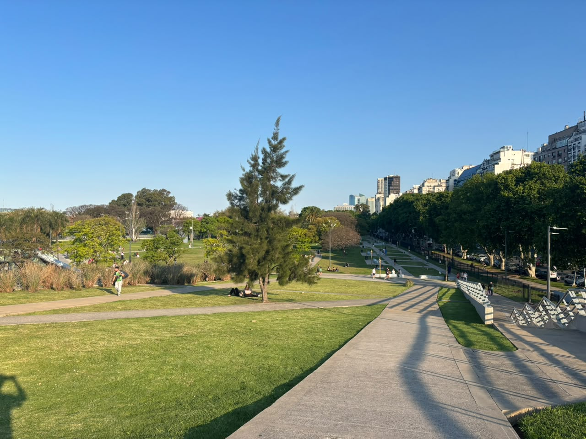
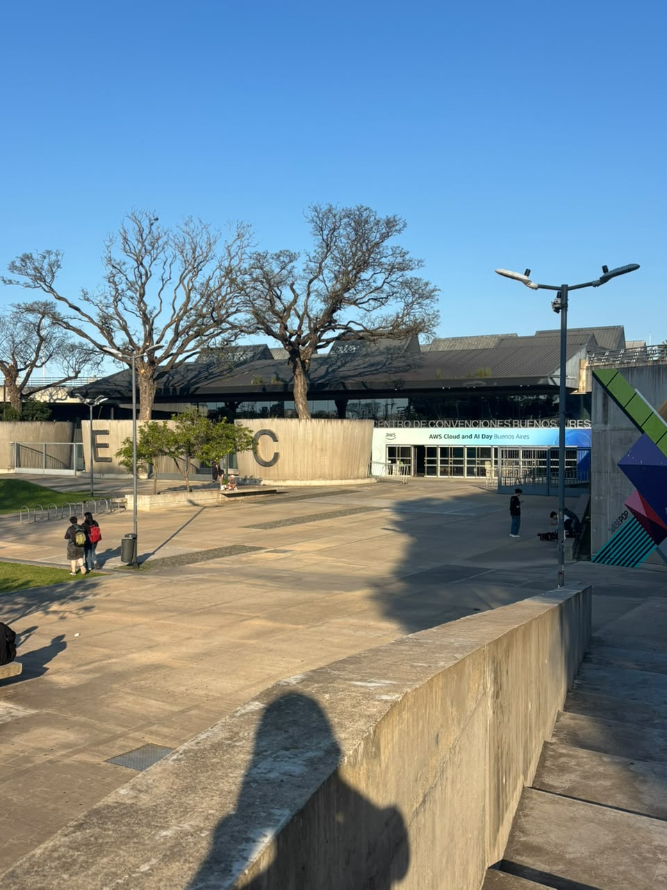
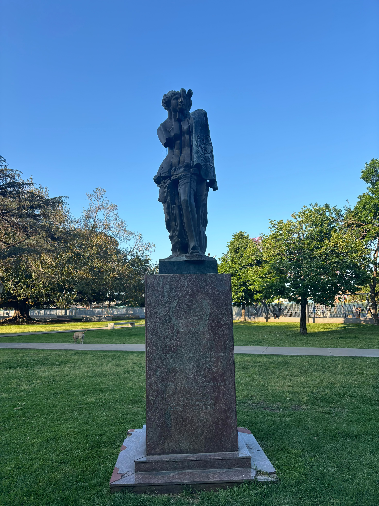
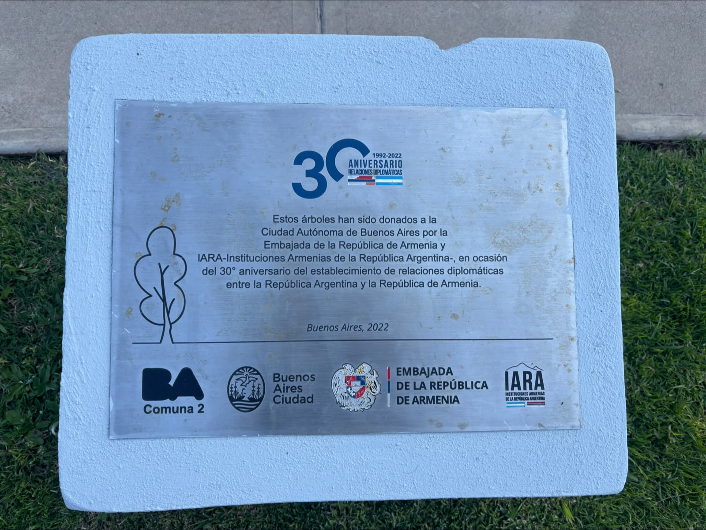
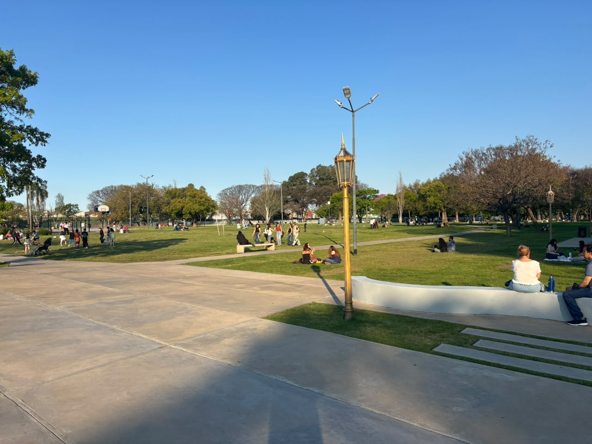

Parque Carlos Thays
Naturaleza, arte y el recuerdo del Italpark en pleno Recoleta





La data del parque
- Ubicación: Av. Figueroa Alcorta y Av. Callao (Recoleta).
- Horarios: Abierto todo el día, es espacio público.
- Acceso: Libre y gratuito.
- Instalaciones: Hay patio de juegos para los chicos, posta aeróbica y un canil enorme.
- Cómo llegar: Estás a un paso de la línea H (Facultad de Derecho) y pasan un montón de colectivos por Libertador y Callao.
Si caminás por Recoleta, es imposible no cruzarte con el Parque Thays. Inaugurado en 1998, este espacio verde ocupa un lugar súper nostálgico para muchos porteños: acá es donde funcionó durante décadas el mítico parque de diversiones Italpark. Hoy la onda es totalmente distinta. Sus lomadas gigantes de pasto son el lugar perfecto para tirar una lona, tomar mates el fin de semana o simplemente desconectar un rato del ruido de la ciudad.
Pero el parque no es solo pasto y árboles. Caminando por los senderos te vas a ir topando con obras de arte buenísimas (literal, funciona casi como un museo al aire libre) y vas a notar cómo el diseño paisajístico se integra re bien con la arquitectura moderna del Centro de Convenciones de Buenos Aires, que está semi-enterrado bajo el nivel del parque.
Si venís a pasar el día, acordate de las reglas de siempre: tirá la basura en los tachos, paseá a tu perro con correa y bozal (para soltarlo tenés el canil), y cuidemos entre todos los monumentos que hacen tan lindo a este lugar.
¿Qué vas a encontrar?
El icónico Torso de Botero
Es imposible que pase desapercibida. Esta tremenda escultura de bronce fue donada por Fernando Botero y es una parada obligada para la foto.
Centro de Convenciones
Parte de la arquitectura nueva del predio. Su diseño está pensado para camuflarse con el paisaje, metiéndose casi por debajo de las lomas.
Obras de arte escondidas
A lo largo de los senderos te vas a ir cruzando con estatuas clásicas que le dan ese toque parisino típico de Buenos Aires.
Rincón de la memoria
Vas a encontrar un sector con árboles donados y una placa que conmemora los 30 años de relación diplomática entre Argentina y Armenia.

Un respiro en la ciudad
Las farolas antiguas y el césped enorme lo hacen el spot ideal para juntarse con amigos, entrenar o tirarse a leer un libro al sol.